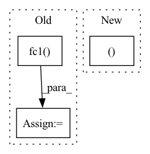

Pattern ID :33168

Before Change
return action, logp_pi, mu
def get_log_density(self, state, action):
a = F.relu(self.fc1(state))
a = F.relu(self.fc2(a))
mu = self.mu_head(a)
mu = torch.clip(mu, MEAN_MIN, MEAN_MAX)
log_sigma = self.sigma_head(a)
log_sigma = torch.clip(log_sigma, LOG_STD_MIN, LOG_STD_MAX)
sigma = torch.exp(log_sigma)
a_distribution = Normal(mu, sigma)
action_clip = torch.clip(action, -1. + EPS, 1. - EPS)
After Change
return action, logp_pi, a_tanh_mode
def get_log_density(self, state, action):
a_dist, _ = self._get_outputs(state)
action_clip = torch.clip(action, -1. + EPS, 1. - EPS)
logp_action = a_dist.log_prob(action_clip)
return logp_action
In pattern: SUPERPATTERN
Frequency: 3
Non-data size: 3
Instances
Fragment ID: 95879991
Project Name: ryanxhr/dwbc
Commit Name: b3791e408af7125fde12cda1cdeaefbaa400aacc
Time: 2022-06-30
Author: xuhaoran8@jd.com
File Name: algos/DWBC.py
M Class Name: Actor
N Class Name: Actor
M Method Name: get_log_density(3)
N Method Name: get_log_density(3)
M Parent Class: nn.Module
N Parent Class: nn.Module
M File Name: algos/DWBC.py
N File Name: algos/DWBC.py
M Start Line: 55
M End Line: 71
N Start Line: 57
N End Line: 59
'>
Before Change
x_avg = x.mean((2, 3), keepdim=True)
x_max = F.adaptive_max_pool2d(x, 1)
x_avg = self.fc2(self.act(self.fc1(x_avg)))
x_max = self.fc2(self.act(self.fc1(x_max)))
x_attn = x_avg + x_max
return x * x_attn.sigmoid()
After Change
def forward(self, x):
x_avg = self.fc2(self.act(self.fc1(x.mean((2, 3), keepdim=True))))
x_max = self.fc2(self.act(self.fc1(x.amax((2, 3), keepdim=True))))
return x * self.gate(x_avg + x_max)
'>
Fragment ID: 95880006
Project Name: feng-lab/pytorch-image-models
Commit Name: 742c2d524726d426ea2745055a5b217c020ccc72
Time: 2021-05-27
Author: rwightman@gmail.com
File Name: timm/models/layers/cbam.py
M Class Name: ChannelAttn
N Class Name: ChannelAttn
M Method Name: forward(2)
N Method Name: forward(2)
M Parent Class: nn.Module
N Parent Class: nn.Module
M File Name: timm/models/layers/cbam.py
N File Name: timm/models/layers/cbam.py
M Start Line: 27
M End Line: 32
N Start Line: 34
N End Line: 36
'>
Before Change
self.max_action = max_action
def forward(self, state):
a = F.relu(self.fc1(state))
a = F.relu(self.fc2(a))
mu = self.mu_head(a)
mu = torch.clip(mu, MEAN_MIN, MEAN_MAX)
log_sigma = self.sigma_head(a)
log_sigma = torch.clip(log_sigma, LOG_STD_MIN, LOG_STD_MAX)
sigma = torch.exp(log_sigma)
After Change
return a_distribution, a_tanh_mode
def forward(self, state):
a_dist, a_tanh_mode = self._get_outputs(state)
action = a_dist.rsample()
logp_pi = a_dist.log_prob(action).sum(axis=-1)
return action, logp_pi, a_tanh_mode
'>
Fragment ID: 95879999
Project Name: ryanxhr/dwbc
Commit Name: b3791e408af7125fde12cda1cdeaefbaa400aacc
Time: 2022-06-30
Author: xuhaoran8@jd.com
File Name: algos/DWBC.py
M Class Name: Actor
N Class Name: Actor
M Method Name: forward(2)
N Method Name: forward(2)
M Parent Class: nn.Module
N Parent Class: nn.Module
M File Name: algos/DWBC.py
N File Name: algos/DWBC.py
M Start Line: 35
M End Line: 52
N Start Line: 51
N End Line: 54